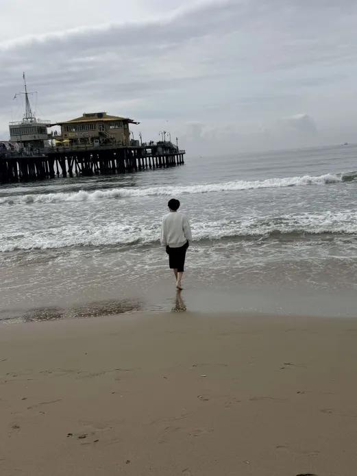

Takashiba
Hinata
My page
ABOUT ME
卒業研究
ゲーム要素を用いた
利用規約とプライバシーポリシーの
不読特性に関する行動分析と教育的アプローチ

零壱会 加入
・オープンキャンパス運営スタッフ
・零壱総会 OBの方を招待しての講演会企画
・ワクワクものづくり運営
⇛小学生向けイベント企画
Signeit 学習量学年1位
・情報を扱う全ての学科で
学習量学年1位を達成し表彰
1年次 特待生＆発展トラック
・1年次GPA : 3.7
・成績優秀者として特待生に選出
・発展トラック認定（学科成績上位30％）
零壱会 幹事長 就任
・1年次でやった内容をリーダーして運営
・夏オープンキャンパスでは、
情報学部全体でのプロジェクトマネージャー 担当
ICTサポート 班リーダー
・新入生向け学内ITマニュアル作成の班リーダーとして
昨年のマニュアルを今年度版へ編集・印刷するのだが、
例年、期限ぎりぎりに作業が終わるところ
12人をまとめ期限より1か月早く作業を完了
・2026年度新入生が初めに受ける「PC設定ガイダンス」では
2時間登壇し、新入生にPC設定の説明を行う
・その他担当業務
⇛シフト作成、ミーティングの議事録作成
基本情報技術者試験 合格
・勉強期間：2024年4月～2024年6月
・6月受験 8月賞状授与
アメリカへ旅行
・特待生で学費免除となった資金で、
日本での個人旅行もしたことがない中
初めての旅行でアメリカへ
HITポイント5位以内受賞
・資格取得や学内活動などでポイントを獲得し、
学科内で5位以内に入賞し表彰
2年次 発展トラック
・2年次GPA : 3.83
・発展トラック認定（学科成績上位30％）
IT教育教材改良 副リーダー
・伊藤忠テクノソリューションズ様が提供している
高校生向けのIT教育教材をお借りし、
学会発表を目標に小学生向けに改良を行う。
・期間：2026年6月～2027年3月 予定